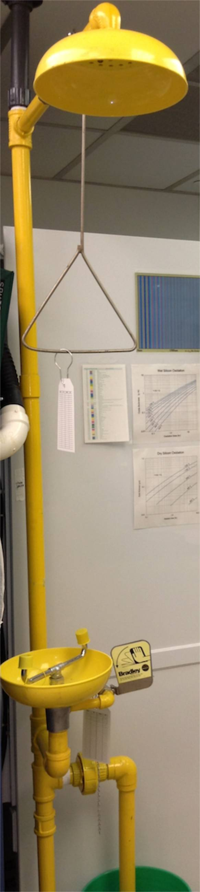

Eyewash and Shower

Start flushing with water immediately.
EMERGENCY SHOWER (next to acid cabinet)
For use if your skin has been exposed to dangerous chemicals such as acids
- Pull triangle on chain to operate shower.
- Remove contaminated clothing as you flush yourself. Don't be modest; you can dress in a clean tyvek suit on the way out.
- Do not concern yourself with water on the floor.
- Wash for 15 minutes (that seems like a very long time; have your
lab partner time it).
EMERGENCY EYEWASH (next to acid cabinet)
For use if your eyes have been exposed to dangerous chemicals such as acids
- Push lever to operate eyewash.
- Hold eye lids open and direct flow into eyes.
- Remove contact lenses while flushing eyes (lab partner: ask about contacts, don't assume)
- Do not concern yourself with water on the floor.
- Wash for 15 minutes (that seems like a very long time; have your
lab partner time it).
There is a drain under the eyewash and shower; lab partner can pull the
lid to drain some of the excess water if desired.